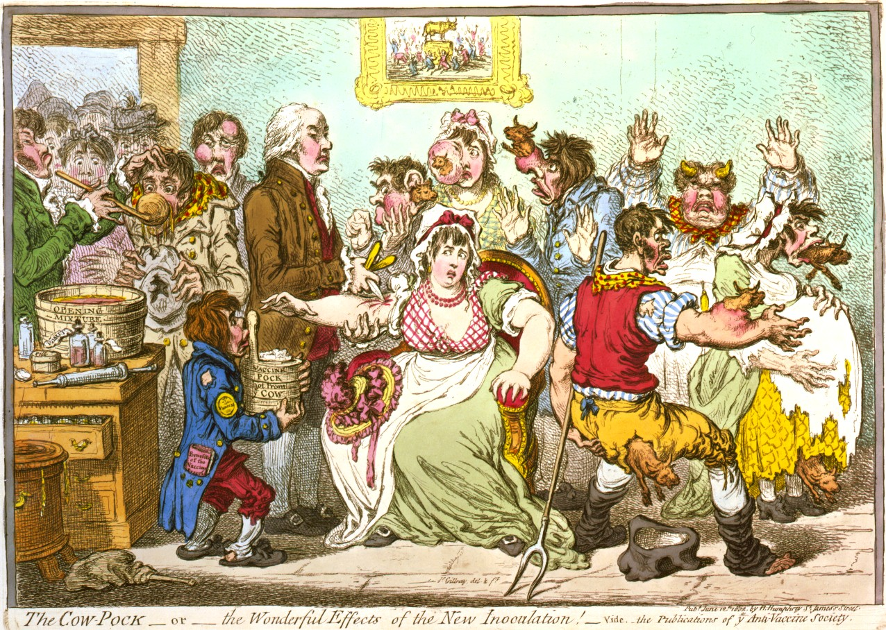
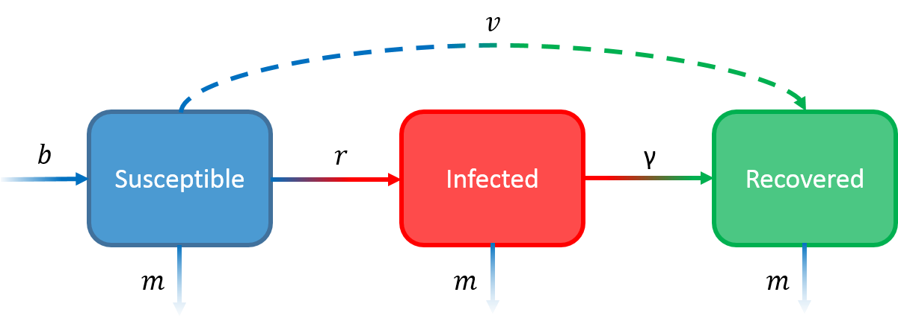
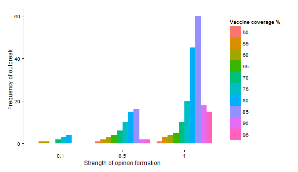
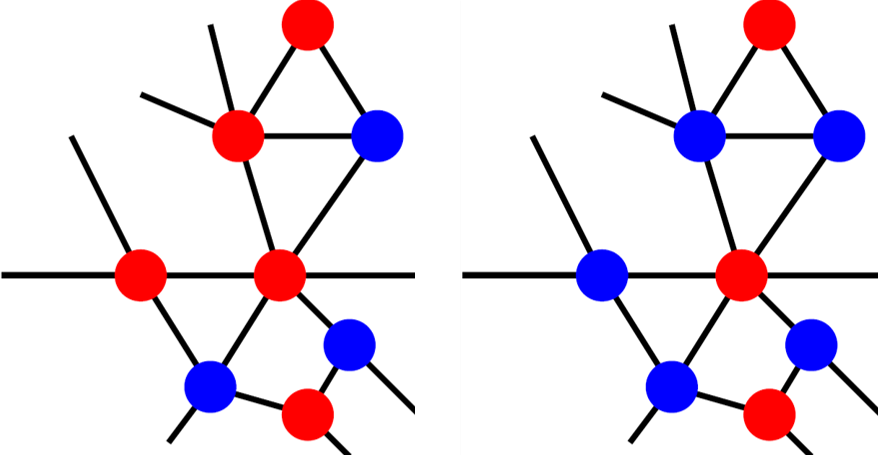
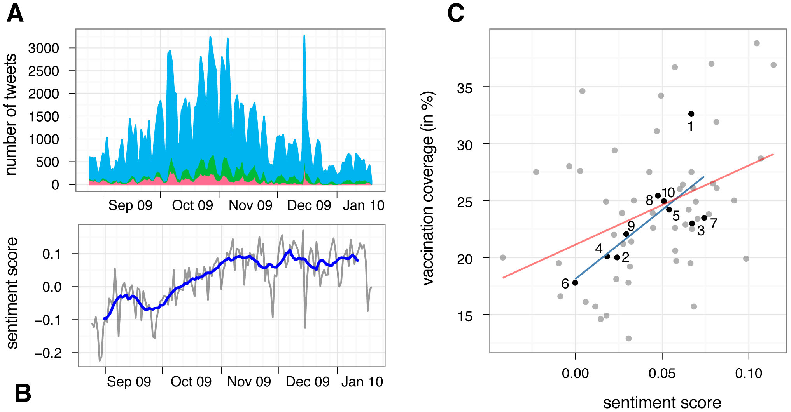
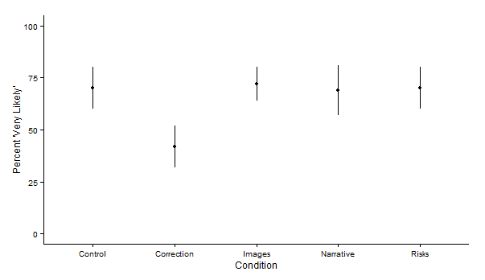

Anti-vaccine sentiment is as old as vaccination itself. In 1801, Edward Jenner published his results of the success of his early experiments on the smallpox vaccine, and by 1802, enough people were scared of it that political cartoonist James Gillray produced an extremely unsubtle satirical painting entitled "The Cow-Pock---or---the Wonderful Effects of the New Inoculation!":

Figure 1: A political cartoon mocking people's fears about the smallpox vaccine by James Gillray, 1802.
Even as the smallpox vaccine began to gain ground, a vociferous anti-vaccination movement in Stockholm threatened to undo the progress made by Jenner and others. This movement---which bears striking similarities to the anti-vaccine movements of today, down to charismatic individuals proposing quack treatments and making everything worse---led to a steep drop in vaccine coverage in the city and a corresponding dramatic increase in the incidence of the disease. Nowadays, anti-vaccine movements are still quite influential and have played a role in pertussis outbreaks in the 60s and 70s, and, more recently, the well-publicized measles outbreaks linked to Disneyland. One truly terrifying example is in Nigeria, where distrust of both western intervention and local governments has led to a boycott of vaccines, which has in turn resulted in a resurgence of polio in the region. Anti-vaccine sentiment is greatly impacting disease dynamics today.
There has been a lot of recent work on incorporating human behavior into mathematical models of disease transmission. One group of researchers that are ahead of the curve is the Salathé group at Penn State University, who study the interaction between human behavior (specifically anti-vaccine sentiment) and disease dynamics. This research involves taking a classic mathematical model of disease transmission and applying it to a realistic model of a human population.
The classic model of disease transmission is called the SIR model. The SIR model considers a single population of individuals and splits them up into three groups, or "compartments": 1) people (S)usceptible to the disease, 2) people (I)nfected with the disease, and people (R)ecovered from the disease (R). The model then tracks the rate of change of the number of people in each compartment over time.
To model this process you need to know four numbers: the rate of infection (\(r\)), the rate of recovery from infection (\(\gamma\)) , the birth rate (\(b\)) and the mortality rate (\(m\)). You may have noticed that these numbers have nothing to do with vaccines; the standard SIR model does not include vaccination. One way to incorporate vaccination into the standard SIR model is to consider all vaccinated people as "recovered" and then the process of vaccination takes people from S to R. If you do this, you also need to know the rate of vaccination (\(v\)). The below figure depicts this model framework.

Figure 2: Each box represents a category of people and each arrow represents a possible movement from one category to another with rate given by the letter corresponding to the arrow. Vaccination adds the dashed line.
A crucial assumption of the SIR model is that the population is well-mixed and that people interact with each other like particles in an (ideal) gas. This assumption makes analyzing the model very easy and generally works well in small communities where everybody interacts frequently with each other, but when we try to model more complicated scenarios and at larger scales (like the spread of a disease through a city or a country) it doesn't work as well because at these scales people don't actually behave like an (ideal) gas. Is your chance of meeting somebody in New York close to your chance of meeting somebody in California? Is your chance of meeting somebody even in the next city close to your chance of meeting somebody in your own city? Populations of humans are rarely well-mixed, and so researchers have been forced to come up with ways to remove the assumption of a well-mixed population. The most common (and probably best) approach is to model the population as a social network.
Social networks are mathematical structures that consist of nodes (which represent people) and edges (which connect the nodes and represent social interactions). We'll call people who are connected to other people "friends" here, even though you don't have to be a friend to have a social interaction. If we consider a population as a social network, we can label each node as belonging to either S, I, or R, and then only allow disease transmission if an S individual is connected to an I individual on the network. This strategy allows for much more accurate modeling of population structure in epidemiology.
So we have a model of disease transmission, and we have a realistic model of human populations. All we need now is a way to model the human behavior (in this case, vaccine opinions).
We can model vaccine opinion formation on social networks. Salathé and Bonhoeffer (2008) randomly generated a social network of 2000 people where on average each person has 10 friends1. People were then randomly assigned either a positive or negative opinion of vaccination. They then allowed people's opinions to influence the opinions of their friends: people sometimes switched their opinion to match those of their friends. The likelihood that a person would switch was the "strength of opinion formation". This opinion-generation process created clusters of people on the network who shared the same opinion, with an increased strength of opinion formation leading to more clusters.
After the network was set up, the researchers "vaccinated" all the pro-vaccine people and infected a random unvaccinated person and then simulated an SIR model where unvaccinated people can get infected with probability proportional to the number of infected friends they have. They measured how often outbreaks occurred during the simulation for many different strengths of opinion formation.

Figure 3: Increased strength of opinion formation leads to an increase in outbreak frequency, with the strongest effects for intermediate levels of vaccine coverage. Adapted from Salathé and Bonhoeffer 2008.
Salathé and Bonhoeffer found that even if people showed only a slight preference to have the same opinion as their friends (a low strength of opinion formation), the probability of an outbreak dramatically increased. This effect was strongest at intermediate vaccination levels (75-85 %), when there is a decent chance that clusters of unvaccinated people are not isolated from each other by vaccinated people. So, opinion clustering can have a large, potentially very detrimental effect on the spread of a vaccine-preventable disease.

Figure 4: Vaccinated people are in blue, anti-vaccine people are in red. Left: example of a network where vaccination levels are low and the chance of a cluster of anti-vaccine people is high. Right: example of a network where vaccination levels are high and the chance of a cluster of anti-vaccine people is low.
Does opinion clustering actually occur in real populations? And how do opinion-forming processes really work with respect to vaccines? The Salathé group at Penn State have been using Twitter to investigate these questions.
In a follow-up study, Salathé and Khandelwal (2009) collected all English-language tweets from August 25th, 2009 to January 19th, 2010 that contained all forms of the words "vaccine" and "immunize". For each tweet, they collected the date, time, location, user ID, follower IDs, and friend IDs. They then sorted2 the tweets into four categories: positive, negative, neutral, and irrelevant. An example of a positive tweet:
off to get swine flu vaccinated before work
An example of a negative tweet:
What Can You Do To Resist The U.S. H1N1 "Vaccination" Program? Help Get Word Out. The H1N1 "Vaccine" Is DIRTY.DontGetIt.
An example of a neutral tweet:
The Health Department will be offering the seasonal flu vaccine for children 6 months - 19 yrs. of age starting on Monday, Nov. 16.
And finally, an example of an irrelevant tweet:
Filipino discovers new vaccine against malaria that 'treats' the mosquitoes, too!
The researchers created a Twitter network by taking every user who had at least one positive, negative, or neutral tweet as a single node, and put an edge between users that were followers or friends. All users were given an overall vaccine sentiment score, which was the net percentage of the user's relevant tweets with a positive score.

Figure 5: (A) Total number of negative (red), positive (green), and neutral (blue) tweets relating to influenza A(H1N1) vaccination during the Fall wave of the 2009 pandemic. (B) Daily (gray) and 14 day moving average (blue) sentiment score during the same time. (C) Correlation between estimated vaccination rates for individuals older than 6 months, and sentiment score per HHS region (black dots) and states (gray dots). Numbers represent the ten regions as defined by the US Department of Human Health & Services. Lines shows best fit of linear regression (blue for regions, red for states).
Overall, 14 % of relevant tweets were considered positive and 10 % were negative. There was a positive correlation between sentiment score and vaccination coverage, which means that people are more likely to tweet positively about vaccines in areas of high vaccine coverage. This discovery may allow public health efforts to find areas to target with vaccination "communication interventions," as Salathé and Khandelwal put it.
Another interesting result of the Twitter network study was real-time tracking of vaccine opinion dynamics. The researchers measured the average vaccine sentiment score over time, and found out that over the time frame of the study the score started off negative but then quickly became positive and stayed that way throughout the remainder of the study. These results suggest that pro-vaccine people, unlike anti-vaccine people, mostly voice their opinions only during vaccine seasons. This technique seems like it could be useful in monitoring real-time opinions, allowing public health officials to intervene in at-risk populations before an outbreak actually occurs.
Does the Twitter network demonstrate opinion clustering? Do people follow/friend people who share their vaccine opinion? The researchers measured this quantity by calculating an assortativity coefficient \(r\), which is:
So how about actually trying to solve these issues? Salathé, Vu, Khandelwal, and Hunter (2013) explored the Twitter network in more depth and found that anti-vaccination sentiment was contagious but pro-vaccination sentiment was not, and that it is possible for exposure to pro-vaccine sentiment to lead to an increase in anti-vaccine sentiment! This second observation was neatly captured in a survey study conducted by Brendan Nyhan and colleagues. The authors distributed online surveys that measured a person's initial attitude towards the MMR vaccine, then presented that person with a passage that corrected misconceptions about the vaccine/autism link, a list of risks of measles, mumps, and rubella, a dramatic narrative about a child hospitalized with measles, a picture of a child with measles, or a control passage (on the costs and benefits of bird feeding). The survey then asked the individuals some questions about the MMR vaccine.

Figure 6: Proportion of people initially unfavorable to the MMR vaccine that answered "Very likely" to the question "If you had another child, how likely is it that you would give that child the measles, mumps, and rubella vaccine, which is known as the MMR vaccine?" Adapted from Nyhan et al. 2014.
The above figure shows the proportion of people in three categories of initial vaccine sentiment (given by the headers of each of the subpanels) that answered "Very likely" to the question "If you had another child, how likely is it that you would give that child the measles, mumps, and rubella vaccine, which is known as the MMR vaccine?" The only passage that actually affected the results was the passage that corrected misconceptions, and that passage made people who were unfavorable to vaccines to begin with become even more anti-vaccine!
So, the practice of actually disseminating information to increase the incidence of pro-vaccination behavior is a bit more complicated than one would think and requires a lot of serious thought and effort.
It's very easy to associate with people who are similar to you. Everybody does it all the time, and it's not your fault. Even very small preferences can lead to clustering of opinion in a population. Vaccine sentiment is one characteristic that forms these clusters. Unfortunately, the presence of these opinion clusters can lead to frequent outbreaks of disease, which harms people (such as immunocompromised individuals and people who are too young to be vaccinated) who had nothing to do with the initial anti-vaccination choices in the first place. When our behavior contributes to real harm, we must make a conscious effort to understand just what the effects of our behavior are on other people and how we can manage ourselves to minimize these effects. The path towards finding a solution is complicated and difficult, but it is worth taking.
If you want more information about the topic of incorporating human behavior into epidemiological models, these papers are recent and relevant.
The network was generated using the Watts-Strogatz algorithm with parameter 0.02, if you're interested. This method results in networks where you can connect any two people with a small number of intermediate people (a "six degrees of separation" kind of thing). ↩
They used machine-learning to train a statistical model to do this sorting. ↩